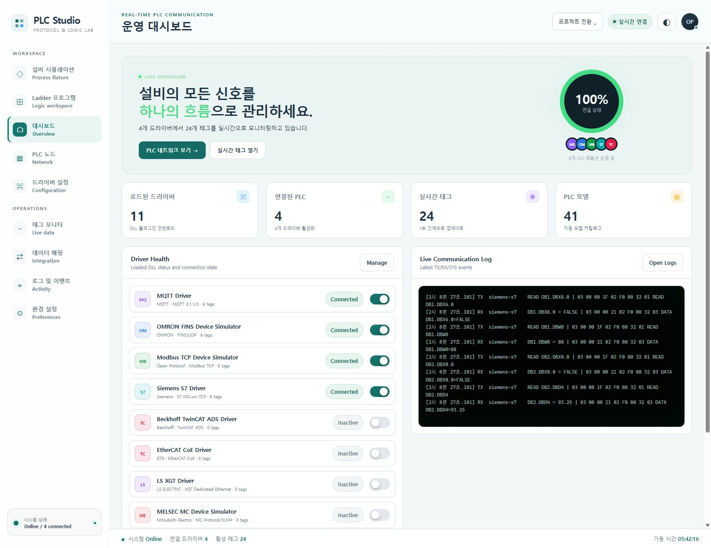

확인된 동작
2026-10-09 격리 Docker fixture에서 PLC → Gateway Modbus 읽기와 Good 품질을 확인했습니다. 기존 브라우저 검증은 가상 RUN → X0 입력 → 모터 Y0 반응을 포함합니다.
PROJECT 01 / SOURCE & PROTOCOL
장비 없이 시작하는 산업 프로토콜 실험실
THE PROBLEM
실제 PLC 접속 환경과 설비 동작을 반복 재현하기 어려워 상위 수집·분석 시스템의 개발과 검증이 늦어집니다.
THE WORKSPACE
가상 제조 셀, Ladder 실행, 드라이버와 태그, 메모리 매핑을 하나의 작업 공간에서 다룹니다. 상위 제품이 읽는 상태와 카운터의 원본을 제공합니다.
DESIGN DECISIONS
FROM OVERVIEW TO HANDS-ON
장치 연결부터 원본 태그와 가상 Ladder까지
로컬 PLC 시뮬레이션 · 가상 I/O 단일 스캔

화면을 보며 따라가기2026-10-09 격리 Docker fixture에서 PLC → Gateway Modbus 읽기와 Good 품질을 확인했습니다. 기존 브라우저 검증은 가상 RUN → X0 입력 → 모터 Y0 반응을 포함합니다.
프로토콜별 결측·지연, 명령 UUID/TTL와 Ack 감사, 자산 식별자의 명시적 매핑을 확대 검증합니다.
화면은 로컬 개발 환경에서 직접 캡처했습니다. PLC → Gateway → Twin 읽기 흐름은 2026-10-09 격리 fixture에서 확인했습니다. 일곱 제품의 운영 통합, 실장비 제어, 정상 OEE 생산 흐름과 AssetHub 승인 API는 확인 범위에 포함하지 않습니다.